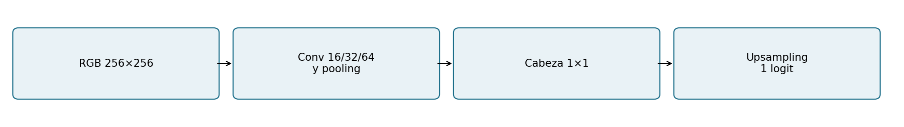
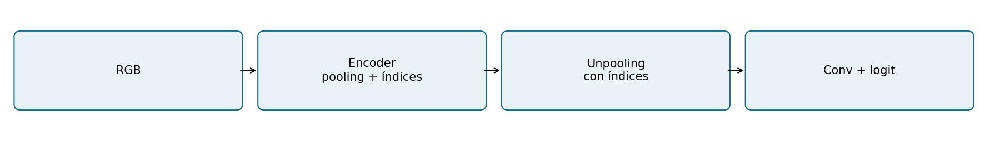
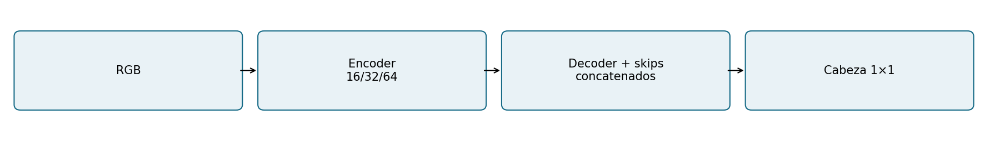
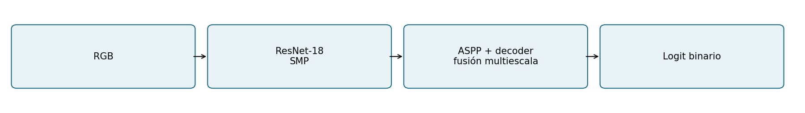
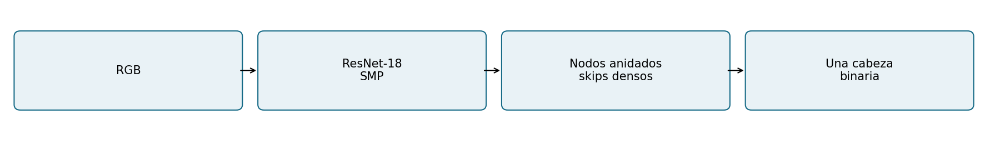
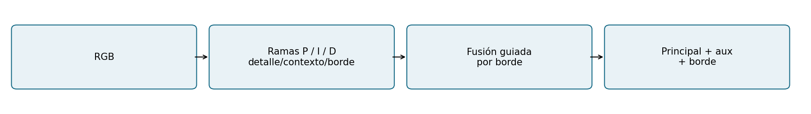
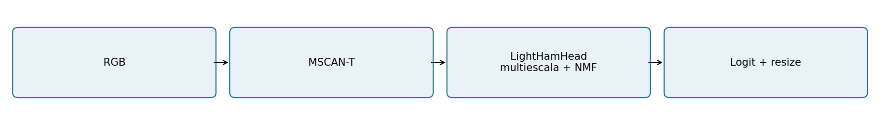
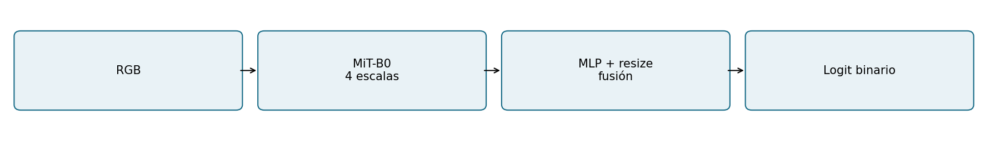
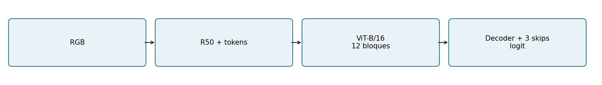
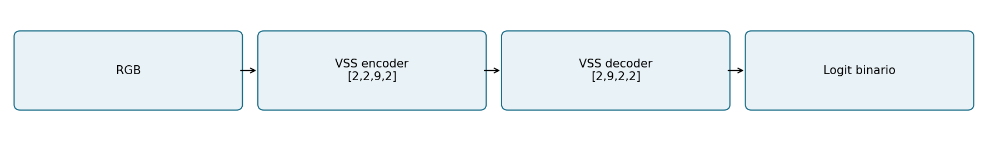

Fichas de las diez implementaciones#
Las fichas describen el código ejecutado. Cada diagrama es un esquema de mecanismos, no un volcado completo de capas. Las dimensiones exactas se consultan en el código y la configuración fijada. Las referencias arXiv conservan el año del preprint; no se confunde con el año de publicación editorial. Las cifras de este benchmark proceden de los artefactos auditados. Las tablas numéricas originales de los artículos, FLOPs adaptados y tiempos de los papers no están certificados por estas fichas; su cotejo continúa pendiente en el checklist. No se inventan cuartiles de conferencias.
FCN compacta#
Familia: CNN. Parámetros medidos: 72,145. Fuente primaria: Long, Jonathan; Shelhamer, Evan; Darrell, Trevor (2014). Fully Convolutional Networks for Semantic Segmentation. DOI del preprint; texto y versiones.

Implementación compacta local; no FCN-8s original, sin sus fusiones laterales. Dos reducciones espaciales.
\(h_j=\mathrm{ReLU}(b_j+\sum_i W_{ji}*x_i)\); la interpolación devuelve la salida al lienzo.
Costo convolucional O(HW k² Ci Co). Bajo tamaño; el mapa grueso puede perder detalle. Artículo fundacional excluido de la ventana reciente con justificación.
Receta: Adam, lr=0.001, weight decay=0.0; cinco semillas; mismo tamaño, criterio de parada y salida de un logit. Resultado local: Dice test 0.8535 ± 0.0136; no sustituye el resultado del artículo original.
SegNet compacta#
Familia: CNN. Parámetros medidos: 85,761. Fuente primaria: Badrinarayanan, Vijay; Kendall, Alex; Cipolla, Roberto (2015). SegNet: A Deep Convolutional Encoder-Decoder Architecture for Image Segmentation. DOI del preprint; texto y versiones.

Compacta local 16/32/64; no encoder VGG16 completo del artículo.
\(u=\mathrm{Unpool}(z,\operatorname{argmaxpool}(h))\) reutiliza posiciones, no todos los valores del encoder.
Convoluciones más almacenamiento de índices; ahorra mapas de skip pero no certifica menor latencia sin medición.
Receta: Adam, lr=0.001, weight decay=0.0; cinco semillas; mismo tamaño, criterio de parada y salida de un logit. Resultado local: Dice test 0.8247 ± 0.0334; no sustituye el resultado del artículo original.
U-Net compacta#
Familia: CNN. Parámetros medidos: 118,273. Fuente primaria: Ronneberger, Olaf; Fischer, Philipp; Brox, Thomas (2015). U-Net: Convolutional Networks for Biomedical Image Segmentation. DOI del preprint; texto y versiones.

U-Net compacta local; encoder propio, no ResNet-18. Dos niveles de reducción.
\(d_l=\mathrm{Conv}([e_l,\mathrm{Up}(d_{l+1})])\) preserva detalle por concatenación.
Convoluciones y activaciones de skip; fundamento médico, adaptación binaria HAZMAT sin preentrenamiento.
Receta: Adam, lr=0.001, weight decay=0.0; cinco semillas; mismo tamaño, criterio de parada y salida de un logit. Resultado local: Dice test 0.8464 ± 0.0137; no sustituye el resultado del artículo original.
DeepLabv3+ R18#
Familia: CNN. Parámetros medidos: 12,329,297. Fuente primaria: Chen, Liang-Chieh; Zhu, Yukun; Papandreou, George; Schroff, Florian; Adam, Hartwig (2018). Encoder-Decoder with Atrous Separable Convolution for Semantic Image Segmentation. DOI del preprint; texto y versiones.

SMP 0.5.0, ResNet-18; no Xception de los resultados principales del paper.
\((x*_r w)(i)=\sum_k x(i+r k)w(k)\); ASPP combina distintas dilataciones.
Contexto multiescala y refinamiento. Cambian backbone, clases y receta; sus cifras originales no son una referencia numérica directamente comparable.
Receta: AdamW, lr=0.0005, weight decay=0.01; cinco semillas; mismo tamaño, criterio de parada y salida de un logit. Resultado local: Dice test 0.8140 ± 0.0246; no sustituye el resultado del artículo original.
U-Net++ R18#
Familia: CNN. Parámetros medidos: 15,970,449. Fuente primaria: Zhou, Zongwei; Siddiquee, Md Mahfuzur Rahman; Tajbakhsh, Nima; Liang, Jianming (2019). UNet++: Redesigning Skip Connections to Exploit Multiscale Features in Image Segmentation. DOI del preprint; texto y versiones.

SMP sin supervisión profunda ni poda. Su encoder y tamaño difieren de la U-Net compacta.
\(x^{i,j}=H([x^{i,0},\ldots,x^{i,j-1},U(x^{i+1,j-1})])\) representa la fusión anidada.
Más conexiones y memoria de activaciones. Comparar estas redes no aísla el efecto de los skips.
Receta: Adam, lr=0.0005, weight decay=0.0; cinco semillas; mismo tamaño, criterio de parada y salida de un logit. Resultado local: Dice test 0.8076 ± 0.0059; no sustituye el resultado del artículo original.
PIDNet-S#
Familia: CNN. Parámetros medidos: 7,716,291. Fuente primaria: Xu, Jiacong; Xiong, Zixiang; Bhattacharyya, Shankar P. (2022). PIDNet: A Real-time Semantic Segmentation Network Inspired by PID Controllers. DOI del preprint; texto y versiones.

Código de autores; m=2, n=3, planes=32, ppm=96, head=128. Tres salidas conservadas.
\(L=L_{principal}+0,4L_{aux}+1,0L_{borde}\) en nuestra receta; el objetivo de borde deriva de la máscara.
La analogía PID es estructural; no es un controlador físico. Las pérdidas auxiliares impiden atribuir toda diferencia solo a la topología.
Receta: AdamW, lr=0.001, weight decay=0.01; cinco semillas; mismo tamaño, criterio de parada y salida de un logit. Resultado local: Dice test 0.7936 ± 0.0231; no sustituye el resultado del artículo original.
SegNeXt-T#
Familia: CNN con atención convolucional. Parámetros medidos: 4,225,121. Fuente primaria: Guo, Meng-Hao; Lu, Cheng-Ze; Hou, Qibin; Liu, Zhengning; Cheng, Ming-Ming; Hu, Shi-Min (2022). SegNeXt: Rethinking Convolutional Attention Design for Semantic Segmentation. DOI del preprint; texto y versiones.

Fuentes de autores con capa de compatibilidad local; SyncBN adaptada a ejecución monodispositivo. No es un Transformer.
\(\mathrm{Att}(F)=F\odot \mathrm{Conv}_{1\times1}(\sum_i \mathrm{Branch}_i(\mathrm{DWConv}(F)))\) resume la atención convolucional.
Filtros separables multiescala; NMF de la cabeza puede usar inicialización aleatoria, por lo que se fija RNG de evaluación.
Receta: AdamW, lr=0.0001, weight decay=0.01; cinco semillas; mismo tamaño, criterio de parada y salida de un logit. Resultado local: Dice test 0.7792 ± 0.0104; no sustituye el resultado del artículo original.
SegFormer-B0#
Familia: Transformer. Parámetros medidos: 3,714,401. Fuente primaria: Xie, Enze; Wang, Wenhai; Yu, Zhiding; Anandkumar, Anima; Alvarez, Jose M.; Luo, Ping (2021). SegFormer: Simple and Efficient Design for Semantic Segmentation with Transformers. DOI del preprint; texto y versiones.

SMP 0.5.0; encoder mit_b0, sin pesos externos. Paper guía; réplica de evaluación en ADE20K compatible con el artículo (37,43 % frente a 37,4 % mIoU; capítulo de literatura).
\(\mathrm{Attention}(Q,K,V)=\mathrm{softmax}(QK^\top/\sqrt d)V\); reducción espacial de K,V disminuye costo.
Atención densa O(N²d), reducida según el factor espacial de cada etapa. No afirmar costo cuadrático idéntico al ViT estándar.
Receta: AdamW, lr=6e-05, weight decay=0.01; cinco semillas; mismo tamaño, criterio de parada y salida de un logit. Resultado local: Dice test 0.7053 ± 0.0104; no sustituye el resultado del artículo original.
TransUNet#
Familia: Híbrido CNN–Transformer. Parámetros medidos: 105,322,001. Fuente primaria: Chen, Jieneng; Lu, Yongyi; Yu, Qihang; Luo, Xiangde; Adeli, Ehsan; Wang, Yan; Lu, Le; Yuille, Alan L.; Zhou, Yuyin (2021). TransUNet: Transformers Make Strong Encoders for Medical Image Segmentation. DOI del preprint; texto y versiones.

Código de autores; variante R50-ViT-B/16, tamaño 256, grid 16×16, n_skip=3. Sin carga de pesos.
\(z_{l+1}=z_l+\mathrm{MSA}(\mathrm{LN}(z_l))\) seguido de bloque MLP residual; decoder recupera resolución.
Atención de tokens y CNN; gran capacidad y costo. Su liderazgo de media no prueba que la atención cause la mejora.
Receta: SGD, lr=0.001, weight decay=0.0001; cinco semillas; mismo tamaño, criterio de parada y salida de un logit. Resultado local: Dice test 0.8626 ± 0.0057; no sustituye el resultado del artículo original.
VM-UNet#
Familia: SSM visual. Parámetros medidos: 44,273,833. Fuente primaria: Ruan, Jiacheng; Li, Jincheng; Xiang, Suncheng (2024). VM-UNet: Vision Mamba UNet for Medical Image Segmentation. DOI del preprint; texto y versiones.

VSSM de autores, drop_path=0,2; selective_scan CUDA real. No sustitución por GRU.
\(h_t=\bar A_t h_{t-1}+\bar B_t x_t,\quad y_t=C_t h_t\) resume el mecanismo selectivo; escaneos visuales relacionan posiciones.
Costo lineal en longitud para dimensiones fijas del estado. Requiere extensiones CUDA; no extrapolar eficiencia teórica a latencia no medida.
Receta: AdamW, lr=0.001, weight decay=0.01; cinco semillas; mismo tamaño, criterio de parada y salida de un logit. Resultado local: Dice test 0.8391 ± 0.0297; no sustituye el resultado del artículo original.